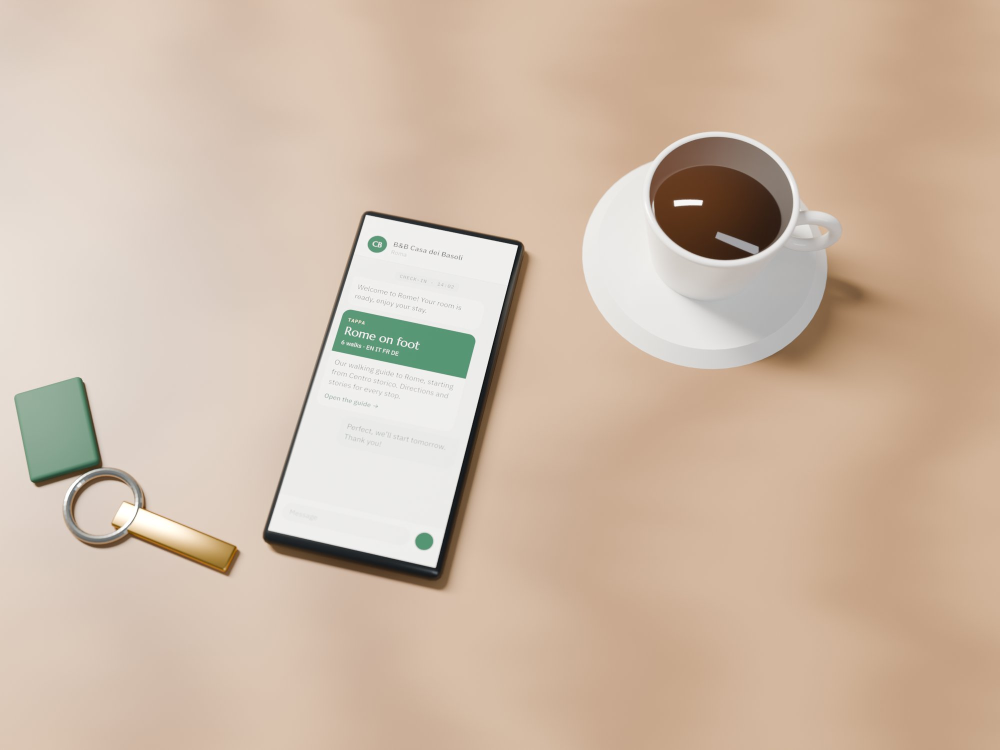
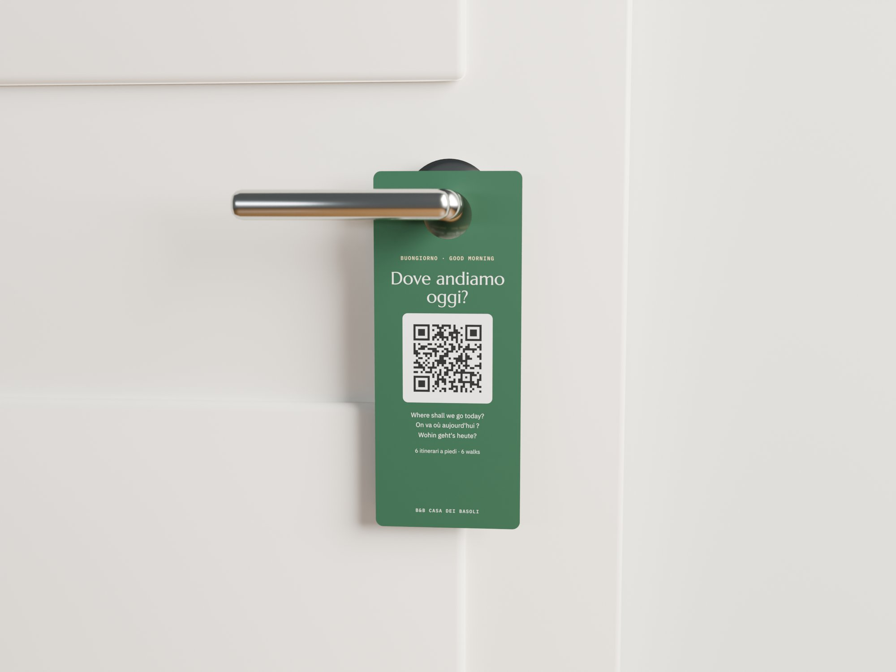

Roma a piedi, con il nome della tua struttura.
Sei itinerari in quattro lingue. L'ospite inquadra il QR code in camera e parte.
Tre passaggi. Al resto penso io.
Preparo la tua guida
Con il nome della struttura e i tuoi consigli. Si apre già sull'itinerario della tua zona.
Ricevi il kit per le camere
QR code, cartoncino, appendiporta e quadretto pronti da stampare.
Gli ospiti inquadrano e partono
Percorso a piedi, la storia di ogni tappa e dove fermarsi a mangiare.
Sei passeggiate, tutta Roma.
Ogni itinerario è di 3–4 km e ha una sosta consigliata per mangiare.
- ICentro storicoda Piazza di Spagna a Campo de' Fiori→
- IIRoma anticadal Colosseo al Circo Massimo→
- IIITrastevere e Gianicolodall'Isola Tiberina alla terrazza del Gianicolo→
- IVVaticano e Pratida Ponte Sant'Angelo ai Musei Vaticani→
- VMonti ed Esquilinodalle basiliche ai Mercati di Traiano→
- VIVia Appia Anticada Porta San Sebastiano a Capo di Bove→

Si apre dal telefono. Niente app.
Italiano, inglese, francese e tedesco. Percorso con Google Maps o Mappe, una tappa alla volta.
Meno domande, recensioni migliori.
Il kit da stampare e il messaggio di benvenuto pronto. Gli aggiornamenti di orari e chiusure li faccio io.

Un mese gratis. Poi decidi.
Prova
Guida e kit, senza impegno
Mensile
Aggiornamenti inclusi
Annuale
Circa 3 mesi risparmiati
Hai un ristorante sul percorso?
Diventa la sosta consigliata di un itinerario
Le risposte rapide.
Gli ospiti devono scaricare un'app?
No. Inquadrano il QR code e la guida si apre nel browser del telefono, su iPhone e Android.
Quali itinerari ci sono?
Sei: Centro storico, Roma antica, Trastevere e Gianicolo, Vaticano e Prati, Monti ed Esquilino, Via Appia Antica. Ogni itinerario è di 3–4 km e ha una sosta per mangiare.
Posso aggiungere i miei consigli?
Sì: il bar sotto casa, la tua trattoria preferita, come arrivare dalla struttura alla prima tappa.
Chi aggiorna orari e chiusure?
Io. Il QR code che hai stampato non cambia mai.
Se smetto cosa succede?
Disdici quando vuoi, senza penali. Il QR code smette di mostrare la tua versione.
Ti preparo la prova con il nome della tua struttura.
Scrivimi il nome del B&B: in un giorno ricevi la tua guida da provare.